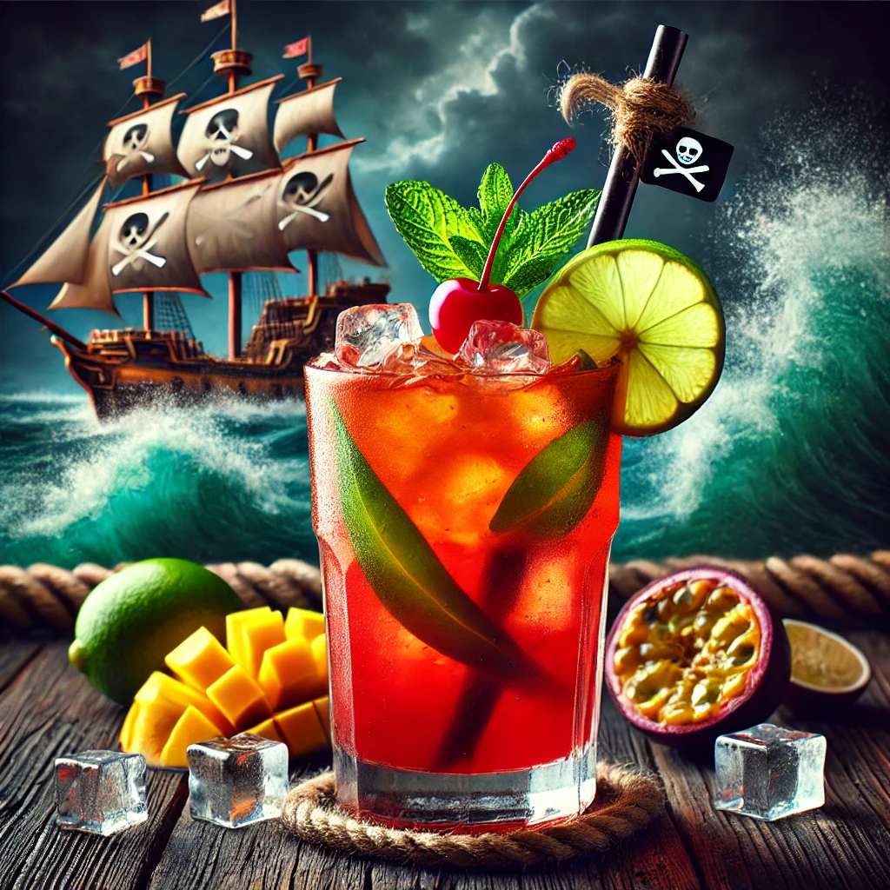

THE BUSTY MERMAID

Pirate's Punch
Ingredienser og Oppskrift:
Ahoy, sjøfarende! **Pirate's Punch** er en drink som kan få selv den hardbarkede piraten til å senke sitt sverd og lene seg tilbake på dekk for en velfortjent pause. Denne drinken er full av sprudlende eventyr, en kraftig smak av rom og tropiske frukter som setter deg rett på en skattjakt langs skjulte kystlinjer.
Så, hva finner vi i denne røde, eksplosive drinken? Her er oppskriften på å skape ditt eget eventyr:
- 1 del **mørk rom** (den ultimate piratfavoritten)
- 1 del **passionfruktjuice** (som den eksotiske skatten du finner på en øde øy)
- 1 del **ananasjuice** (for en tropisk smak av eventyr)
- 1 del **mangojuice** (som solskinnet på havet)
- Et dash **limejuice** (for å gi drinken den perfekte syrligheten)
Hvordan lage denne drinken:
- Fyll en shaker med is og tøm alle ingrediensene oppi.
- Rist med hele din styrke, som om du er i ferd med å overvinne et rivaliserende piratskip!
- Sil drinken i et høyt glass fylt med is og pynt med en skive lime eller et kirsebær.
- Skål for eventyret som venter – og husk, ikke stol på noen andre pirater på vei til skatten!
OBS: Denne drinken er kjent for å få folk til å føle at de er ute på en skjult øy – vær forberedt på å svinge sverdet og lede jakten på skatten!